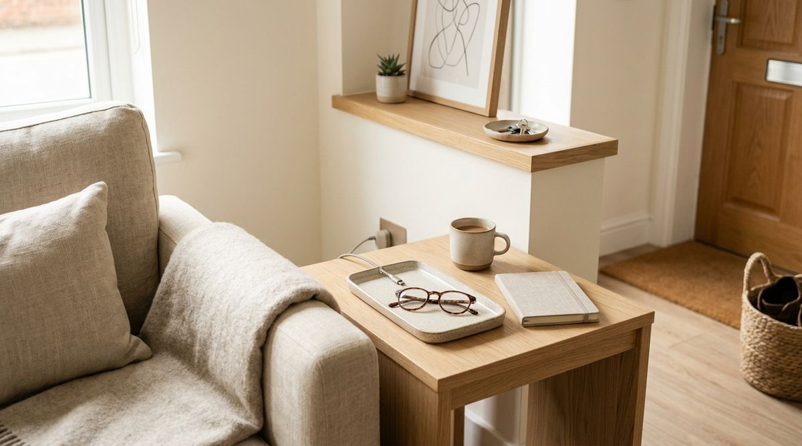

Take a quick walk through your apartment at the end of the day. You will likely notice a familiar trail of everyday items resting on temporary flat surfaces:
- Car keys and sunglasses sitting on the kitchen island
- A work tote or backpack slung over the back of a dining chair
- A phone charging cable snaking across the sofa cushions
- A bottle of surface cleaner and a rag left sitting beside the bathroom doorway
When items constantly scatter across your counters and tables, it is easy to assume that you are messy or that your home lacks sufficient storage space. But in most small apartments, that isn't the root cause at all.
Every one of those items technically has a "home"—the keys belong in a bedroom drawer, the bag belongs in the hallway closet, the charger belongs in an office desk drawer, and the cleaner belongs in a distant laundry cupboard. The real issue is that the designated storage home is simply too far from where the item is actually used.
When putting something away requires unnecessary effort, friction wins, and objects land on the nearest flat surface. The Point-of-Use Storage Rule changes the question from “Where can I fit this item?” to “Where do I actually use this item?”
The Real Problem: Inconvenient Storage Locations
In home organization, convenience dictates behavior. When you come home after a long day with groceries in one hand and your keys in the other, you naturally follow the path of least resistance.
If putting your handbag away requires opening a closet door, moving a coat hanger, and placing it on a high shelf, your brain will subconsciously choose the dining chair every single time. It takes two seconds to drop the bag on a chair and fifteen seconds to walk it to the closet.
Over the course of a week, that small friction creates "clutter migration"—where objects slowly drift toward the rooms and surfaces where they are actively used, remaining there indefinitely because putting them away feels like a chore. Understanding this behavioral friction is one of the core storage habits clutter-free renters swear by.
What Is the Point-of-Use Storage Rule?
The Point-of-Use Storage Rule is a functional spatial principle:
USE → STORE NEARBY → RESET EASILY

Here is how the framework functions in daily apartment life:
- USE: Identify the physical location where the activity actually happens (where you take off your shoes, where you charge your phone, where you prep meals).
- STORE NEARBY: Assign the item a dedicated storage spot as close as practical to that activity point using existing furniture, drawers, or hooks.
- RESET EASILY: When the storage home is within arm's reach of the activity, putting the item away requires zero extra effort—making daily resets instantaneous.
"Don’t just ask where something fits. Ask where you actually use it. The closer storage is to the action, the easier it is to keep surfaces clear."
Why Storage Location Matters (The Carry Distance Principle)
Every foot of physical distance between where an item is used and where it is stored introduces retrieval friction. In small homes, this creates distinct behavioral patterns:
- The Retrieval vs. Return Imbalance: You are always willing to travel across the apartment to get something you need right now (like scissors or a charging cord). But once the task is finished, your motivation to walk it back to its distant drawer drops significantly.
- Visual Drop Zones: Flat surfaces located midway between the activity and the storage spot (kitchen islands, coffee tables, entryway benches) become default drop zones.
- Micro-Friction Accumulation: Having to open two doors, unstack a bin, or walk into another room to put away an everyday object guarantees it will be left out.
By shortening the "carry distance" to near zero, you align your home's storage layout with your natural human habits.
The Three-Step Point-of-Use System
You can apply this system to any room or category using three simple questions:
Step 1 — USE
Ask: “Where does this item actually get used in my daily routine?” Resist the urge to think about where it has traditionally lived or where you have empty closet space.
Step 2 — STORE NEARBY
Find or reallocate the closest practical existing storage spot—a nearby drawer, an underutilized shelf, a wall hook, or a discrete small dish. For ideas on reclaiming overlooked nooks, see our guide on how to find and use dead space in a small apartment.
Step 3 — RESET EASILY
Test the action: “Can I return this item in under three seconds with one hand?” If yes, the location will succeed long-term.
Real-Life Apartment Examples by Zone
Here is how point-of-use storage transforms common clutter hotspots across an apartment:
1. Entryway & Transition Zone
Items: Keys, work badge, sunglasses, everyday bag, mail.
Where they are used: The exact moment you enter or leave the home.
Where they should live: A small wall hook and a shallow catchall bowl mounted directly beside the front door.
Why it works: You can drop keys and hang your bag the second the door closes behind you, keeping them off the kitchen counter. For more on creating dedicated drop zones, read our guide on small entryway hang, sit & store zones.
2. Living Room & Seating Area
Items: Phone charging cable, TV remote, reading glasses, throw blanket.
Where they are used: While sitting on the sofa or reading chair.
Where they should live: A side table drawer, a small ceramic cord tray on the side table, or a neat basket tucked beside the couch.
Why it works: You don't have to get up to plug in your phone or put away your glasses, so the coffee table remains completely clear.
3. Kitchen Prep Counter
Items: Everyday chef's knife, cooking oil, salt cellar, cutting board.
Where they are used: The primary food prep area between the sink and stovetop.
Where they should live: In the immediate drawer right below the prep counter, or on a compact tray directly next to the stove.
Why it works: Keeping everyday cooking tools within arm's reach prevents clutter from backing up on distant counters. For more, explore our strategy on how to keep kitchen counters clear.
4. Bedroom & Nightstand
Items: Lip balm, hand lotion, earplugs, bedtime book, sleep mask.
Where they are used: Once you are already lying down in bed.
Where they should live: The top drawer of the nightstand or a shallow tray on the bedside table.
Why it works: Eliminates the need to get out of bed to put items away, keeping the headboard and bed frame clutter-free.
5. Bathroom & Quick Cleaning
Items: Multi-surface cleaning spray and a microfiber cloth.
Where they are used: Wiping down the bathroom sink and mirror after morning routines.
Where they should live: Inside the bathroom vanity under the sink, rather than in a distant hallway utility closet.
Why it works: When the cleaner is right beneath the sink, doing a 30-second wipe-down becomes effortless.
The “Carry Distance” Diagnostic Test
If you're unsure which storage spots in your home are failing, try this simple 5-question test on five items currently sitting out on tables:
- Where do I use this item most frequently?
- Where does this item currently have an official home?
- How many steps do I have to walk to put it away?
- Is there an unused drawer, shelf, or hook within 3 feet of where I use it?
- Would moving its official home to that closer spot make putting it away automatic?
If an item has a carry distance of more than 10 steps, its current home is a prime candidate for relocation.
Watch the Migration Pattern Before Moving Anything
Before you start rearranging your apartment, take two or three days to simply observe where objects naturally pile up.
Clutter piles are rarely random—they are unconscious behavioral data. If your reusable water bottle is always parked on the desk, that desk needs a dedicated coaster. If your headphones are always on the nightstand, that's where their tray belongs. If clothes you've worn once keep piling on a chair, create a dedicated rewear zone.
Instead of fighting your natural habits with rigid organizational rules, let your daily migration patterns show you where point-of-use homes should be created.
When Point-of-Use Storage Goes Too Far
While point-of-use storage is powerful, taking it to an extreme can create visual clutter. Keep these practical boundaries in mind:
- Don't Create Storage on Every Surface: Putting a dish or tray on every single table creates visual noise. Use hidden storage (drawers, cabinet interiors, wall hooks) whenever possible.
- Avoid Buying Duplicate Items: Having scissors in the kitchen and the desk is reasonable; having six bottles of glass cleaner in every room is wasteful and adds cabinet crowding.
- Reserve Prime Storage for Frequent Tasks: Only items used multiple times per week deserve prime point-of-use access. Seasonal or occasional items belong in deep storage.
To avoid common spatial traps, review our guide on small apartment storage mistakes costing you space.
A 10-Minute Point-of-Use Reset
You don't need a weekend to fix your storage locations. Try this 10-minute exercise right now:
- Pick ONE Room: Focus on your living room, entryway, or kitchen counter.
- Gather 5 Migrating Objects: Pick up five items currently resting on temporary surfaces.
- Identify Their Point of Action: Note exactly where you sit or stand when using each item.
- Relocate to the Nearest Home: Clear out space in the nearest drawer, ledge, or basket.
- Test the Flow for 48 Hours: Notice how much easier it is to maintain clean surfaces when returning items takes two seconds.
Before and After: What Actually Changes?
Notice how small adjustments in storage proximity transform an apartment's daily rhythm:
| Everyday Item | Traditional Storage (High Friction) | Point-of-Use Storage (Low Friction) |
|---|---|---|
| Keys & Wallet | Bedroom dresser (results in kitchen island clutter) | Entryway wall tray beside the door handle |
| Phone Charger | Office desk drawer (leaves cords trailing on sofa) | Side table drawer next to the seating area |
| Everyday Bag | Back of bedroom closet (lands on dining chair) | Sturdy entryway hook or bench cubby |
| Daily Cleaners | Hallway utility cabinet (surfaces get wiped less often) | Under bathroom vanity and kitchen sink |
For more overlooked spots to stash daily essentials, check out our guide on 6 hidden storage spaces you're probably missing in a small apartment.
Common Storage Mistakes to Avoid
When implementing point-of-use storage, avoid these classic errors:
- Organizing for Aesthetics Over Behavior: Placing an item in a high decorative cabinet because it looks pristine on Instagram guarantees you won't put it away on a busy Tuesday evening.
- Choosing Storage Solely by Empty Volume: Storing everyday cutting boards in a distant pantry because that cabinet happens to be large creates daily cooking irritation.
- Buying Organizers Before Mapping Habits: Don't purchase bins until you know which items need to live near specific action zones.
- Ignoring Shared Routines: In multi-person apartments, ensure point-of-use locations are agreed upon so everyone resets items to the same spot.
The Point-of-Use Checklist
Save this quick diagnostic checklist for your next apartment walkthrough:
Point-of-Use Storage Audit Checklist:
- □ Where do I actually use this item most often?
- □ How frequently do I reach for it each week?
- □ Where does it currently live?
- □ Is that location convenient or does it create carry friction?
- □ Is there an existing drawer, hook, or shelf closer to the action?
- □ Can I return it with minimal effort after use?
- □ Does the new spot avoid creating visual surface clutter?
- □ Does this arrangement support my natural daily routine?
Frequently Asked Questions
In a studio, point-of-use storage is even more vital because flat surfaces serve multiple purposes. Focus on micro-zones: keep desk items in a desk drawer, sofa essentials in an end-table basket, and kitchen tools on the prep counter so activities don't bleed into one another.
Not if you utilize closed storage (drawers, cabinet interiors, decorative baskets with lids) or discrete wall hooks. Point-of-use storage does not mean leaving everything sitting on tabletops—it means finding a closed home within arm's reach.
Assign the primary home to the location where you use it 80% of the time (e.g., your primary desk). If a small tool like scissors is used constantly in both the kitchen and the office, having two inexpensive pairs in dedicated point-of-use drawers is far better than constantly hunting for one pair.